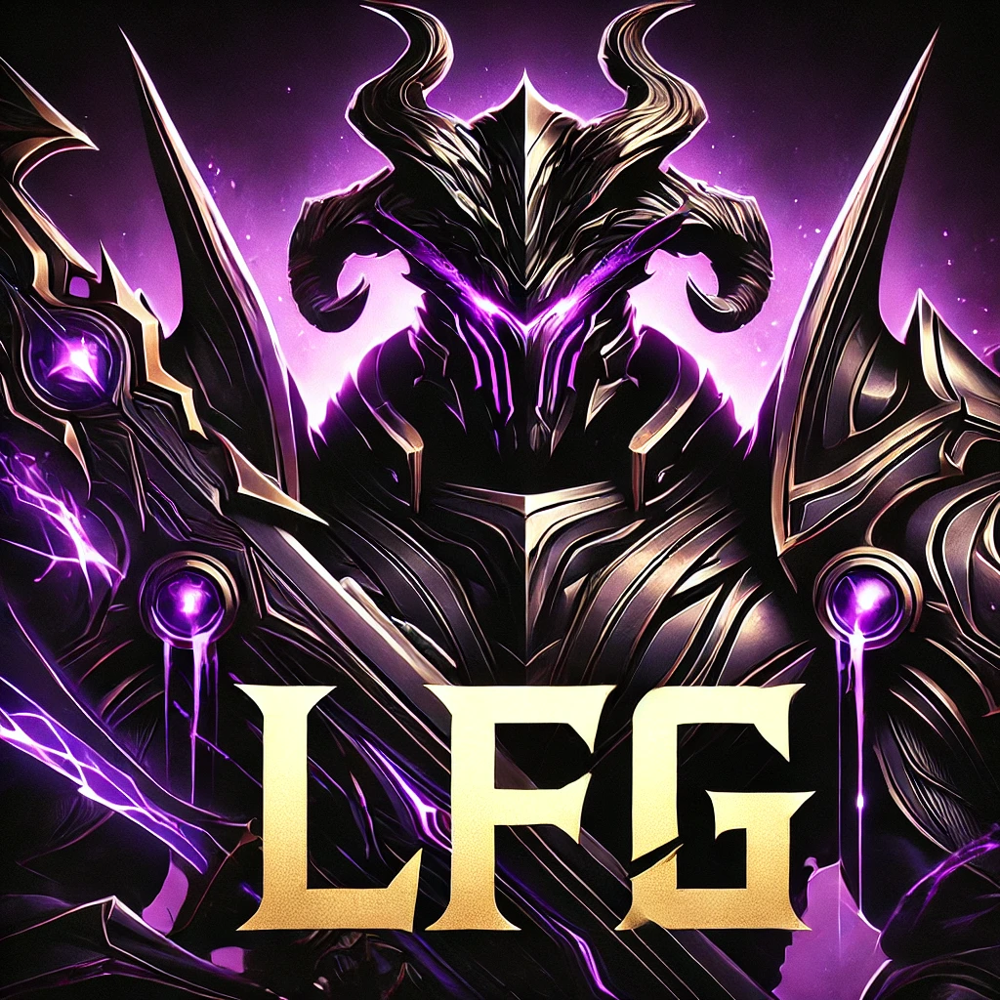

Ze Blog from Golbez

Housekeeping
Bookmark this blog
Join the Discord Group: Ask someone in the chat for a link
Like and subscribe to the @Golbez80 YouTube Channel
ALL TIMES IN THE BLOG SHOULD BE CONSIDERED TO BE EASTERN (US) TIME ZONE
The blog is back!
Sorry this has taken me so long to fix. I had some website deployment issues, but I should be in good shape now.
There’s been so much to cover that I haven’t been able to address. And there is still so so much more. But rather than diving into details right now about Level-Swap tickets and converting Mason to a UR hero, I’m going to zoom way out and talk about game meta and the macro-political influences of the larger game on your daily “life” in LFG.
Many of you have been confused and probably felt jerked around by the back and forth in communication. I apologize. There are many moving parts to this season for the long-established alliances. They are confused, too. I know they are because I’m talking to their leaders across multiple media platforms.
If it’s all confusing for them, then consider that, in addition to adjusting to the Season 1 changes, we are at the same time trying to grow a new alliance. It’s all just so much. We’re still in the early stages of the forming, storming, norming, and performing cycle of group/team growth and on top of all that we’re learning an entirely new game meta for season 1.
Anyway, back to politics. The new map is huge, but it has de jure rules for conquest. For example, you can’t take a level 2 town until you hold a level 1 village. And you can only siege adjacent tiles. There are more rules, but you get the idea.
In addition to those rules of conquest that the devs put in place, there are also de facto rules of conquest we have to abide by in the server. I previously talked to you all about the “haves” and the “have nots” in the server. I mentioned we were fortunate to be the “haves.” Well, it turns out we are “have nots.” And it’s the haves that run the show, regardless of you feel about it.
What I mean is that I’m pretty sure my squad of around 16 million power is the strongest in the alliance. It could be dashblue at the top, but that dude is a silent colossus from the days or yore. Even with a 16M march power, I’m outgunned by multiple HQs in 5-6 other alliances across the server. So even though we have a top-5 alliance power ranking, it’s mostly because of our combined size. But that’s just not enough to gain influence.
Think of it like this. We are kind of like Australia. We’ve got plenty of people. We’ve got koalas and dingoes and basically 95% of the most poisonous animals in the world. But box-jelly fish doesn’t beat nuclear bomb in the expanded version of global rock-paper-scissors. And when the US, China, and Russia decide something is going to happen, Australia can whine, but they just have to deal with it.
That’s where we are. So when you are looking to me (and the R4s) for clear and fast direction, know that I want to give it to you. I just can’t. The top 3 or 4 alliances are carving up the map. They have some arguably valid reasons why they are doing what they are doing that I’ll explain some a bit later in the week.
You all may think this is absurd. “It’s a game,” you say. “Let everyone get a piece of the action!” you shout. There’s truth in that. But this is a game you choose to play. And it’s pay-to-win. Oh, and it’s a game about war.
The politics and pay-to-win nature of the game aren’t going to change. If you want to keep playing, and you want to have a seat at the table, then you gotta grind for it. You gotta be smart with your moves and maximize rewards. You need to log in every day and not waste resources. Read the blog. Ask for tips. Google things you don’t know. Listen to what I tell you and don’t argue. Trust that I’m privy to lots of server-wide chatter that I don’t have time to share with everyone.
We can be top 4. I truly believe it. We may not have the money of other alliances, but we have something they can’t buy: family. They say culture eats strategy (and spending) for breakfast. Let’s show them it’s true.
You want to be at the top? Me too. Lets F$#@!^% Go !

And so it begins
Famiglia, there’s a lot going on. I hope this organization format helps. Make sure you check out info on Season 1 stuff as well as regular gameplay stuff like VS.
Season 1
We’ve learned a lot in the last day. Here’s there skinny on what we think you need to know to get started in Season 1. For now, we are only focusing on your individual gameplay and not large-scale alliance and server-wide gameplay.
Ok. There’s a virus. You need immunity. You get it from upgrading the Virus Research Institute. You need Immune Protein to upgrade the Virus Research Institute. The main way you get that is from farms. Check out the Essential Resources tab for more on that.
Zombies are way tougher in Season 1. They are infected. So as their levels get higher, you need more resistance. You get higher resistance by building and upgrading the new Virus Research Academy.


The Virus Research Institute and the Protein Farms are in the lowest right section of your HQ, an area that was previously unoccupied.
Essential Resources
There are two new currencies: Immmue Protein and Mutant Crystals. You can get them from typical free in-game mechanics like defeating monsters. You can also get through so seasonal tasks and accomplishments. And, of course, you can buy them.
- Immune Protein:
The passive way to get Immune Protein (pickle juice) is from Protein Farms. These are like other resource producing buildings in your HQ. You can upgrade them using Mutant Crystals, the other new currency in Season 1.
You start with one farm, but you can get 4 for free and a fifth if you purchase the weekly pass from the in-game store. There is a strategy to this part of the process. Follow these instructions.
- Build your first farm and upgrade to level 5
- Build your second farm and upgrade to level 10, unlocking farm 3.
- Build your third farm and upgrade to level 10, unlocking farm 4.
- Build your fourth farm and upgrade how you like.
Upgrading your weekly pass farm does not help you unlock your free farms!
Mutant Crystals:
Mutant Crystals primarily come from event accomplishments and from your first time defeating infected monseters (first blood kills). The first blood doom walker each day (first DW you kill, regardless of level) also gives you crystals. And, as you may have guessed, you can buy them from the store.

Crystals are essential for upgrading your Protein Farms.
Killing Infected Zombies
Zombies now have new information explaining the minimum recommended resistance for attacking and rallying. You get higher resistances by upgrading the Virus Research Institute.


When you attack zombies without meeting the minimum resistances, a few things happen:
- You deal less damage, especially if you are significantly under the minimum.
- More troops die than usual
- Some injured troops become infected and continue to do less damage
You can get around the resistance requirements to some extent with rallies. As long as the person who rallies meets the requirements for resistance (and power as usual), the rally should have a good chance. In this way, higher resistance squads can help carry lower resistance squads.
Doom Elites are a lot harder this Season. There is a work-around to help low-power/low-res folks. Coordinate with someone with 1250+ resistance to rally with you. You will have to launch it to get credits, and because of your low resistance, you will lose lots of troops the higher the Doom Elite level. However, if you choose a squad and remove all but 1 hero, you will make sure you take only a fraction of the normal troops into battle. That’s fine because the other person you’re working with should have the power to kill the Doom Elite for you.
If you don’t know, you remove heroes from your squad the same way you add and change them around. Go to the “Garage” just outside your wall.
Your Infected HQ
When you attack zombies that are too much for you, some of your squad
comes back infected. This is reflected in a purple icon on your HQ
(world map view). A new icon on the left of your screen also tells you
your infection level. You can share your HQ coordinates in the chat to
have your alliance fam help you clear the infection. You help clear the
infection from someone’s HQ by scouting it. ` 

Alternatively, before you get all cleaned up and disinfected by our loving fam, you should take a squad with infected troops out into the wild and attack a HQ that doesn’t belong to any alliance. I know. That’s mean. It’s a war game, though. You can either feel good about yourself or you can complete tasks for rewards like mutant crystals and immunity protein shakes. You can’t do both.

VS and Other Stuff
Don’t forget about VS. Big ticket items today:
- Radar Tasks
- Drone Data and Parts Spend
- Stamina Spend
- Gathering resources from iron mines, gold mines, and wheat fields
- You don’t get VS points until you leave the mines/fields
- Set an alarm to remind you to bring your squads home before reset at 10 p.m.
- ABG: Always Be Gathering
- Hero XP Spend
- Normally I say wait until Thursday to use hero XP in VS. You get almost 3x the VS points on Thursday as You do on Monday. However, I think a win today would be awesome. So spend them if you want!

Friday Night Lights
Famiglia,
It’s the first round of the biggest night in Last War:Survival each week for our new LFG alliance. I want to thank everyone for all the hard work, dedication and patience. I don’t know that PAL ever had close to 90% of our members at 1 million VS points. You all did that today. And many of you got out in the mud and earned you 10,000 honor points. Don’t forget to spend them only on Legendary Gear Blueprints in the honor shop!
Unfortunately, I won’t be around to celebrate and play with you all tonight. I’ve spent so much of the past week with my face buried in my phone gaming and coordinating or on my laptop writing this blog that my wife is about to murder me.
So tonight I’m putting the game down for a while and taking her out for a much deserved night on the town.
I want to take this opportunity to tell you that I’m never going to be mad at you for prioritizing real life needs over this game. This should be an escape from, not the creator of, stress in your life. Tonight, I’ll lead by example.
I leave you in very capable hands. Your R4s have been and continue to work tirelessly to make sure you all can continue to enjoy the game at a high level. Tonight they will lead your through Desert Storm and prepare you for Enemy Buster. Do me a favor and take care of the following big ticket items:
- Server reset happens at 10:00 Eastern, giving way to Day 6 of VS:
Enemy Buster
- Make sure that by 10:00 all of your squads are out from gathering and inside your HQ
- Make sure you have removed all of your squads from your wall
- Turn on your 24 hour shield
- Ideally, you should do this between 10:00 and 10:04 p.m.
- If you don’t have one, please buy one in the Alliance shop
- If you have to put your shield up before 10:00 (like I do), set an
alarm for tomorrow so you’ll know to log back in and turn another one on
(you may want to use two 12-hour shields or an 8-hour shield to finish
up tomorrow)
- If you’re signed up for Desert Storm:
- Join the Desert Storm Channel in our Discord and familiarize yourself with Lizthezard’s battle plan.
- Log in on time! Desert Storm starts at 9:00 sharp and goes until someone clearly wins or 40 minutes is up
- Be careful not to use your Healing Speedups in Desert Storm
- The troops you lose inside the event aren’t lost in your actual HQ
- Healing speed ups used during the event, however, ARE USED UP in
your actual HQ
- If you aren’t in DS, please try and stay out of the chat too much
from 9:00 to 9:40 so the team can communicate while fighting.
- If you are online tonight from 12:00 (midnight) til 2:00, you will have your first window for playing Winter Storm. It’s actually more fun in a lot of ways than Desert Storm and it’s another way to earn Honor Points. There are a few 2-hour windows for playing in WS, but the first one is super late tonight. And the second is fairly early in the morning. Check out the event and read up for more info.
Ok, that’s all. I’ve got to get ready for date night. Have fun tonight, fam.
Warm anti-hero regards,

Capital War/Capitol Conquest a.k.a “Fun in the Mud”
Famiglia,
This is the first post today. It’s all about Capital War.
Last War: Survival is clearly designed as a war game. You may have noticed that the center of the map is gray/brown with a big capital building in the middle. Each Friday from 10:00 a.m. - 6:00 p.m., the alliances in the server can battle for control of the capital. The winning alliance gets to be the President and control lots of stuff for the server.
Because this game also has server vs server mechanics, the top alliances in our server (421) have an agreement whereby they peacefully rotate control of the capital and share the rewards and responsibilites that go along with it.
For the rest of us, though, this is still an opportunity to earn Honor Points, which are arguably the most important currency in the game for reaching the highest power levels for your heroes.
Earning Honor Points in Capital War:

During the Capitol Conquest, only commanders battling in Contaminated Lands (the “mud”) will earn captial war event points.
In the Capitol Conquest, you score capital war event points by inflicting serious injuries and casualities on enemy (other 421 alliance) Units. The higher the troop level, the more event points you earn.
You’ll also earn event points when your own units die. Higher level fallen units give more points.
Once you reach a certain event point threshold, you’ll receive corresponding Honor Rewards, including honor points.


Captial War Mechanics

The actual fighting you need to do takes place ONLY IN THE CONTAMINATED ZONE. That’s the brown/gray mud in the center of the map.
There are two main ways to participate.
You find a resource tile in the in mud that has a red pick axe icon, signifying that another alliance member is in that tile. Then you attack that tile. If you lose, it means all your troops are injured or dead. That sucks, but you still are earning the chance to get honor points. And while losing troops sucks, you get VS points on Day 5 for training troops, so there’s a silver lining there, too.
You can also occupy an empty tile and either wait to be attacked or share your tile’s coordintes to World Chat so people know you want them to attack you.
The agreed upon norm in our server says any occupied tile in the mud during Capital War is fair game for attack. Don’t complain if you were just harmlessly gathering gold. ore, or food and you get murdered. It’s not safe out there. This is your fault.
That being said, some people ignore this norm and think you should only get attacked if you advertise your tile in WC. This is stupid for many many reasons, but I can’t control other folks. Most alliance leaders share my view. But you may get angry DMs from people if you attack their tile without finding it in world chat.
So best practice is to either find a tile in World Chat and attack it, or post a squad to your own tile and advertise it yourself.

Why all the fuss?
As I’ve said before: honor points are the most important late-game currency as of the time of writing this blog. And they are hard to get. You cannot upgrade your heroes’ gear beyond level 40 without them.
This is where patience comes into play. The honor point store has a LOT of tempting items for sale. Before I knew any better, I used to buy UR shards and UR decoration chests. But I wish had instead been hoarding all the Legenday Gear Blueprints I could from the beginning. My best advice is to only spend honor points on gear blueprints. You’ll be glad you did that later in the game.
Advanced Capital War Strategy
If you have a very powerful squad (~17M plus), you can basically squat on a tile, broadcast it to World Chat and just sit there while you murder all the troops that attack you.
Otherwise, Capital War takes a bit of time to get to 100,000 event points, which is when you max out the 10,000 honor points available in this event.
Finishing Faster
The mud makes everything take fover. Your squads move at a fraction of the time. Resource tile speed boosts don’t matter.
What’s more you can’t even [tile surf]. And even if you win and take over another tile, you can’t attack a second resource tile from the one you’re currently on. You have to go back to your HQ and start the journey over.
Workarounds:
Sometimes there aren’t any squads to attack at nearby tiles. Because travelin in the mud takes FOREVER, you should try to tile sure and slignshot around the mud using the reosource tiles surrounding the capital (but not in the contaminated ground). Get as close to the resource tile you want to attack and then target that one in the mud.
If you have a powerful squad and you want others to attack you, you are best served occupying a resource tile in the mud near a different alliance. You may think that it’s best to choose a tile that is close to our hive so your squad gets there faster. But LFG famiglia can’t attack your tile for honor points. So you’ve essentially made it far less appealing for the people you need to attack you to do so. By occupying a tile next to other alliances you give them more incentive to attack you. Don’t do this with a weak squad, though. Once you are defeated you are redirected strictly through the mud back to your HQ. It takes forever and you don’t want to have to do that repeatedly.
Finishing More Efficiently
While it’s true that you get event points when you lose troops, the better way to get them is by killing other people’s troops. If you have a super powerful squad, you don’t have to worry too much about this.
If your squads aren’t particularly powerful, though, you need to scout the resource tiles before you attack. If you are selective in your attacks and concentrate on squads of comparable/lower power, you have a better chance of earning your event points from troop kills rather than troop deaths.
Micro-healing
You’re probably going to lose a lot of troops on your way to 10,000 honor points (and the other rewards). If you heal them all in one go it may take you a day or more. That’s not what you want.
The good news is that Friday is a popular day for playing this game. Our alliance (LFG and U5A) has good boosts for using the help button. Every time you ask for help with healing and an alliance member pushes the help button it takes ~10 minutes off the heal time. Depending on your Alliance Center level and survivors stationed there, you can get a lot of time taken off the healing.
It’s best to try to heal in 30-75 minute batches (depending on your buffs) and ask for help each time. You can get 24 hours of dealing done in about half an hour depending on how long you stay online and how many people are active when you are.
You can also use healing speedups in a pinch, but micro-healing is best as Day 6 is the day for getting VS points for using healing speed ups.
Have fun in the mud!

The Road Ahead
Famiglia,
Congratulations and thank you for a successful merger. We’ve got PAO vets, LFG newcomers, and U5A transplants all under one roof. Some people are here for the long haul, others may find this isn’t for them. That’s ok. I’ll keep saying it: This is a game. Don’t do things that aren’t enjoyable.
Today I’m going to be releasing some more content on the strategy guide. I know today is Day 4 of VS, which is Hero upgrade day and is everyone’s favorite. The VS mechanics for Day 4 are very simple, though. So I’m going to focus on Day 6: Enemy Buster intead. I’ll explain more in the Strategy Guide throughout the day. But I want everyone to be thinking about this stuff starting now.
Shielding Up
This week we haven’t been laser-focused on winning VS, but we need to be laser-focused on preparing and learning to win VS.
Day 6 (Enemy Buster- Friday - Saturday evening) is worth 4 points in the weekly VS battle. The fastest way to earn points on Day 6 is by killing troops for the other alliance. The fastest way to help the other alliance win is to lose your troops to them. There are two main ways to prevent this:
- Buy a 24 hour shield
- You can get these in the alliance store.
- They cost a lot of alliance points.
- Prioritize buying these shields above everything else you buy in the alliance store
- Don’t deploy your 24-hour shield until 2-3 minutes have passed after
reset.
- There is a 5-minute cool down on enemey buster when you cannot attack or be attacked and earn/lose points.
- You can’t use the free teleported either.
- If you use your 24-hour shiled during the 5 minute cool down window,
it wil stay up through the entire Enemy Buster event (unless you scout
or attack a base while it’s active)
- Remove your squads from your HQ wall
- We’ve been putting our squads on the wall of our HQs a lot recently for Zombie Siege. Make sure you remove them ahead of tomorrow night.
- This shouldn’t be a big deal because your shield makes this a non-issue.
- But just in case… don’t give away kills to the enemy. Take your guys (and gals) off the walls.
- If you don’t know how to do this, ask in the chat.
Shield discipline on Friday night will be the main focus of my administration. Please do everything you can to protect your base, and by extension la famiglia.
Hero Advancement
If you haven’t used all of your Hero XP and recruitment tickets yet, try to save some for the Hero Advancement period of Arms Race (2:00 - 6:00 EDT). Double dipping is frowned upon in the salsa bowl, but we love it in Alliance Duel.
Zombie Invasion (a.k.a. “The Most Wonderful Time of the Last War Year”)
The Zombie Invasion event is live. It’s the best rotating event in the game. I’ll post some tips on it later, but there’s already a YouTube video I made on “tile surfing” that you should check out.
House keeping
Please (PLEASE) do these things today (might as well do them now):
- Join the Discord group
- Bookmark this blog
- Bookmark the Strategy Guide
- Like and subscribe to this YouTube account
Have fun out there,

Nothing about this doesn’t suck
All,
I love this game. I play it all the time. Over the past four days I’ve spent more hours than I can count trying to keep our alliance from falling apart. Nevertheless, some things are hard to do. I cannot make everyone happy. I’ve got the DMs to prove it.
The merge with U5A was a coordinated effort in discussion with multiple folks from PAO as well as other server presidents. We were at risk of losing everything we’d worked for and the merger was the best move ahead. I believed it then. I still believe it.
When we agreed to have U5A join us, there were 17 or so empty slots. U5A needed to bring over 30 or so people. At that time, PAO members were still leaving, and we have 5-10 accounts spread all across the map who hadn’t moved to the alliance in weeks. It appeared that there would be few, if any, instances of people who would need to transition to U5A, which was to become our growth and learning focused alliance.
I won’t take credit for this, but over the past four days multiple folks who appeared to be inactive began showing up in ways they hadn’t in months. It has been amazing.
It also makes the merger more difficult.
But it doesn’t make it wrong.
We want to build an alliance that is a family but is also competetive. What separates us from other alliances, I believe, is that we are more interested in earning wins through supporting and helping one another rather than spending. You’re not going to be kicked out because you can’t or don’t want to spend money.
I’m sure much of this reads as hypocritical, especially if you end up getting asked to move to U5A. But let me be clear, there is no path of “excommunication” here. If we ask you to go to U5A, you will still be a part of this family. You just wont be in the in-game LFG alliance.
You will still, however, have full access to our discord chats, this blog, more resources that are coming in the future, the support of this community, the friendship and camaraderie we have, and you will also have as much intervention as we can possibly provide if you get invaded by a strong alliance.
You will also likely have opportunities to serve in a leadership capacity in U5A. It would be amazing if that alliance became as strong as this one. This game is actually really well designed to leverage the power of alliances.
Please know that this absolutely sucks all the way around. I chose not to leave for multiple other alliances when asked this past weekend because I just didn’t want to leave so many of you behind.
My DMs are open. Please contact me if you want to complain or volunteer. There’s no reason for anyone to leave yet. But if we have to ask people to move to U5A, I will start with those who do volunteer.
While I would love for everyone who leaves to move to U5A, I understand that you may be pissed at me and not want anything to do with us. I don’t blame you. You have our blessing, whether you care or not, to try and join any other alliance that suits you.
With apologies and stress,

An Open Letter to the Family
Mia Famiglia,
I address you this way on purpose. La Famiglia means family. I spend probably 3-4 hours a day playing this game with you all. I’ve come to know a lot about you and have been blown away at how cool this group of humans is. If I’m going to spend this much time with you all, I want to know that we are in a respectful and fun environment.
At the same time, this is a game about war. There are zombies to be killed, doom walkers to be toppled, trucks to be plundered, and cities to be sacked Conquest is literally the prime game mechanic. We need to be committed to the cause and to each other. We need that ride or die mentality. When Makosa rallies a level 140 Doomie, I want you to think, “Lets freaking go!” When it’s Friday night and Desert storm kicks off, I want you to think, “Lets FREAKING go!” And when server reset flips and it’s time for Enemy Buster and that level 30 Disco Kitty lands in our base, I want you to be chill because you are in the safety of your shield. But in your heart, through your bones, deep down to your soul I want you to feel like shouting “LET’S FREAKING GOOOOOOOOO!”
It’s in this spirit that I’m announcing that we are retiring PAO Mavericks. This is a new alliance now. We are a family ready to get after it. We may not outspend anyone, but we will grind these upgrades and get each other’s backs every day. Why? Because we are family.
We are lfG: La FamiGlia
Warm anti-hero regards,

LFG
PAO Update for August 6, 2024
Famiglia,
Today is a big day. Please focus on these big ticket items first.
Big Ticket Items
NEW ALLIANCE LOCATION
- I’m going to be placing a new Alliance Marker on the West side of
the capital (Look left of the mud in the center of the map. We will be
around 10:00 on the “clock face”).
- You will have until reset tomorrow (Wendesday, August 7, 10 pm Eastern) to move there
- If you are not with us at the capital, you risk being booted from
the alliance to make room for the new U5A members merging with us.
- I want everyone to use an Advanced Teleporter instead of an Alliance teleporter
- The Advanced Teleporter allows you to choose your location rather than being automatically placed near the flag.
- Please be very deliberate and careful with your HQ placement. The goal is to arrange our alliance into strict columns and rows.
- DO NOT BE THAT PERSON WHO THROWS OFF THE WHOLE ARRANGEMENT
- You can purchase Advanced Telporters in the VIP store for 600
diamomds or in the Alliance Store for 7,500 Alliance points.


- If you cannot afford either of those and need more time, please reach out to me and we will try to work something out. You will not be allowed to remain in the alliance, however, if you are unwilling to move with us to the capital.
Golbez’s Big Marshall Blunder
I’m an idiot. I accidentally set the next Marshall event for 8 a.m. Eastern tomorrow (Wednesday) morning. I can’t change it. If you want to participate, you’ll need to teleport to the new alliance marker and be online in the morning.
I DO NOT EXPECT ANYONE TO BLOW OFF WORK OR GROWN-UP RESPONSIBILITIES FOR THIS EVENT. IT WAS A MISTAKE. I APOLOGIZE FOR THE INCONVENIENCE.
Today’s Goals
Day 2 is a good day for VS. You get rewarded for upgrading buildings. Sadly this takes a while. On the plus side, you also get rewarded for UR (gold/legendary) Trucks and Secret Tasks. Follow these pro-tips to help boost your score today:
- Pay attention to Arms Race. Don’t unwrap your completed buildings and save your construction speedups for 6:00 - 9:59 p.m. Eastern time.
- Use trade contracts to refresh your trucks and get UR ones.
- Use secret orders and diamonds to refresh your Secret Tasks to UR status
- BE PATIENT
- You don’t have to dispatch trucks and secret tasks as soon as you can. You have a 24 hour window in which to dispatch them all.
- Throughout the day you will open chests and get rewards from multiple parts of the game that may have Trade Contracts, Secret Orders, and diamonds.
- Instead of dispatching purple, green, blue and grays, wait a few
hours and see if you get more options to refresh.
- Trade contracts for refreshing UR Trucks look like this

- Secret Orders for refreshing Secret Tasks look like this

- Trade contracts for refreshing UR Trucks look like this
- Please keep an eye on the Ally Tasks tab. When your secret tasks are ready to collect, other alliances can plunder you and rob rewards. If an ally assists you, however, your rewards are protected, and you can even help folks get bonuses when they collect. It’s a win win.
- This is where you help your alliance famiglia. Check this often.
Especially on VS boost days.

- This is what I should see because my alliance assited me (this is an
old screenshot)

- This is what it looks like when your people don’t assist your tasks
and others plunder your goods and cost you bonus chances for extra map
pieces.

Golbez is very sad about this.
Ok, that’s enough for now. More of these to come. Bookmark this page. I’ll be doing most of my communicating this way.
Warm anti-hero regards,

LFG
PAO Update for August 5, 2024
PAO Famiglia,
I have huge news that should take us all in an exciting new direction. We have heard your cries for new blood in the alliance and we want you to know that you are not alone.
I have been working with Lizthezard and Ntiva very closely to work out the terms and details of an alliance merger. We have taken this very seriously because so many of us spend much of our days in and out of the game, chatting and hanging out and–hopefully-kicking some booty. Considering how tumultuous the last few days and weeks have been, we have been reluctant to do anything else that was so invasive. However, with the launch of Season 1 only a week away, we decided that now is the time to act.
TL;DR We Are Merging with U5A
After much consideration and communication, we have decided to merge with the U5A alliance. There are many reasons why we think this was the right choice. Here are a few:
- U5A is the sister alliance of PAL.
- We will continue to have protection and support of an extremely powerful alliance
- We will stay connected to many of our friends who have migrated to PAL.
- You will likely have opportunities as you grow to apply to PAL if you wish to pursue a more aggressively competitive gampeplay experience.
- U5A will bring a core of ~30 members, including three R4s who are experienced and active players.
- The U5A culture is a perfect fit to mesh with ours. They are focused on growing, learning, and teaching instead of pressuring to win VS battles each week at all costs.
Merger Mechanics
Leadership: The leader of U5A has agreed that I will remain the R5 and leader of the new merged alliance. They will bring several R4 players with them and help us cooradinate and teach.
Location We are planning to move back to the capital. We are still working on a spot, but we will notify you tomorrow. You’ll have until Wednesday evening server reset to teleport to the new assembly. Alliance teleporters are available in the shops and are very cheap (no money required). Those HQs that do not make it to the capital by Wednesday evening will be considered inactive and not interested in the merger. They will be added to our list of members that need to transition elsewhere once we merge (more on this below).
If you need help getting to the capital or can’t afford (or are out of purchases for) an alliance teleport, reach out to me (Golbez) directly. We will try to work it out so that you can wait until Friday and teleport when it is free.
We are choosing to do this before Friday evening vs for a few reasons. Most of all, though, we see this as a show of your commitment and buy in for the future of the alliance.
PAO Membership Our alliance can have 100 members. We are currently between 80-85. With 30-35 U5A members expected, there will be some reshuffling to be expected.
- For the most part, if you are active in PAO, you will almost certainly remain (if you choose to).
- We are going to go through our current membership and identify players who are inactive or rarely log in. Those will be removed from the alliance and notified. If this does not get enough spaces open for U5A, we will ask for volunteers who are interested in a new alliance.
WHICH BRINGS ME TO U5A MEMBERSHIP
U5A is not going away. Their leader, Not So Elite, is going to maintain a second account there and keep watch over it. This will be the preferred alliance for the most casual of our players. If you need to take a break for a while or you just only check your HQ a few times a week, you can join U5A to play at a leisurely pace while enjoying the protection of TWO sister alliances.
U5A will also be a place where you can go and get some experience serving as an R4 and fighting in Desert Storm. This might even be a good place for starting a second account (if you’re brave enough). The downside of moving here is that there are fewer active players, especially since the most active ones are joining us in PAO. On the bright side, U5A has existing tech and alliance bonuses, so you aren’t starting from scratch. I really think this could be a fun place for some folks who just want to play and not have one more thing to worry about.
PAO Culture
The new merged alliance will evolve and develop its own distinct culture. However, the leadership of both U5A and PAO are on the same page when it comes to building a community that promotes enjoying the game through fun, respect, growth, teaching, and learning. We will strive to be competetive through those channels. But we have no plans of becoming an alliance that puts winning above all else. There is nothing wrong with that mentality. This is not only a game, but it is a game that’s literally got WAR in the name. But that gameplay isn’t for everyone.
I know this is a lot, and I hope you’ve made it to the end here. Please keep the following in mind as we move forward this week:
Our goal is to make sure no one has to leave who doesn’t want to. We have workded very hard the last 48+ hours to keep this family together and we have no intention of ruining anyone’s game experience. It’s 100% the opposite. If you have any questions or concerns, just send a DM to Golbez or Ntiva.
Big things ahead. LFG.
Warm anti-hero regards,

PAO Update for August 4, 2024
PAO Famiglia,
Thank you again for your patience and support the past 24 hours (and more if you aren’t new). Let me start with a reminder that this is a game. Everything the leadership and I are working on is meant to help create a culture of enjoying each other and the game. At 10 pm Eastern time, we will receive our next opponent in VS. This opponent will likely be very strong since our matching was made based on our power weeks ago.
I would like to ask that this week we not stress out over VS. We have a long road ahead of us. Instead of throwing all of your resources (Speedups, Diamonds, dollars) into a VS battle we likely won’t win, apply your efforts in a way that maximizes your personal HQ growth. Everything you do to get stronger still helps the alliance. Even if we win, the rewards aren’t great for VS compared to the benefits you will get from Arms Race and upgrades you make sooner rather than later. This won’t always be our approach but it is this week.
For tonight and tomorrow, focus on the following:
- Read all Alliance Announcements and vote in the poll
- Save radar tasks until reset
- Add your soldiers on the wall of your base (click the + button in the house) for Zombie Invasion at 8 pm
- Remain online until Zombie Siege is over. Keep mashing the help button!
- Pause activity from 10-10:05 Eastern. This is good practice.
- Check the arms race calendar and try to synchronize your activities with those time frames. Arms Race rewards are awesome.
There will be a lot more info coming in the next few days. Keep logging in and check the announcements.
Warm anti-hero regards,